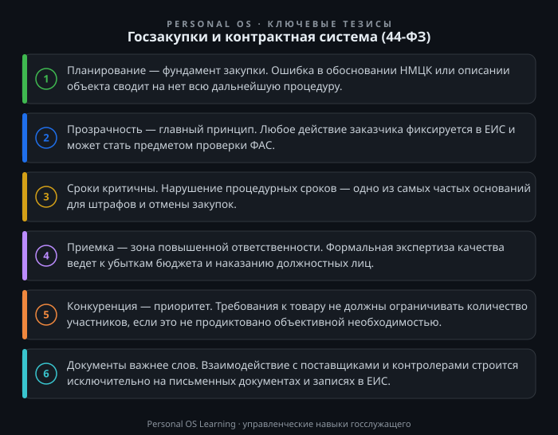

Для государственного и муниципального служащего тема закупок — это не просто «одна из функций». Это, пожалуй, самый яркий пример пересечения административных процедур, финансовой дисциплины и реальной пользы для граждан. Через контрактную систему проходят триллионы бюджетных рублей, и именно от качества работы служащего на этапах планирования, проведения и исполнения контрактов зависит, будет ли построена школа, отремонтирована дорога или закуплено современное оборудование для больницы.
Однако для многих специалистов 44-ФЗ остается «китайской грамотой» из-за обилия поправок и строгости контроля. Цель этой статьи — не пересказать закон, а дать практическую карту: как думать, что проверять и как действовать, чтобы минимизировать риски и эффективно решать задачи. Мы разберем суть контрактной системы, роли участников, жизненный цикл закупки и типичные ошибки, а также предложим инструменты для самопроверки.
Главный закон в этой сфере — Федеральный закон «О контрактной системе в сфере закупок товаров, работ, услуг для обеспечения государственных и муниципальных нужд» Федеральный закон от 05.04.2013 № 44-ФЗ «О контрактной системе в сфере закупок товаров, работ, услуг для обеспечения государственных и муниципальных нужд». Важно понимать: 44-ФЗ — это не просто регламент, это система сдержек и противовесов, созданная для достижения трех целей.
Первая цель — экономия бюджетных средств. Это достигается через конкурентные процедуры (аукционы, конкурсы, запросы котировок), где поставщики соревнуются за право заключить контракт, снижая цену. Вторая цель — прозрачность и антикоррупционная устойчивость. Все действия фиксируются в Единой информационной системе (ЕИС), что позволяет контролерам отследить каждый шаг. Третья цель — эффективность использования результатов, то есть закупка должна закрывать реальную потребность, а не быть «освоением бюджета».
Для служащего из этой философии вытекает главный принцип: приоритет планирования и обоснования. Закупка не начинается с момента размещения извещения. Она начинается с формирования плана-графика и обоснования начальной (максимальной) цены контракта (НМЦК). Если потребность заявлена формально, а цена «взята с потолка», то риски срыва закупки или претензий контролеров возрастают многократно. Поэтому первое, что должен усвоить специалист: работа с закупкой — это работа с документами на каждом этапе, а не разовая акция.
В любой закупке участвуют как минимум две стороны: заказчик и поставщик. Но в контексте государственной службы важно понимать более широкую структуру и свою роль в ней.
Заказчик — это орган власти, казенное учреждение или бюджетное учреждение (в рамках закона). Внутри заказчика есть разделение труда. Контрактная служба (или контрактный управляющий) отвечает за процедуру: от планирования до подписания контракта и приемки. Однако важно помнить, что инициатор закупки (профильный отдел, которому нужен товар или услуга) несет ответственность за формирование требований. Если вы, как специалист профильного отдела, напишете в заявке некорректные характеристики, то контрактная служба формально разместит извещение, но именно ваши формулировки могут стать причиной жалобы в Федеральную антимонопольную службу (ФАС).
Поставщик (участник) — это юридическое лицо или ИП, который подает заявку. Взаимодействие с ним строго регламентировано. Закон запрещает создавать преимущественные условия для отдельных участников, вести переговоры вне предусмотренных процедур (например, при электронном аукционе) и требовать документы, не предусмотренные законом.
Контролеры — это, прежде всего, ФАС России (контроль за соблюдением процедур) и органы внутреннего государственного (муниципального) финансового контроля (проверка законности использования бюджетных средств). Также существует ведомственный и общественный контроль.
Понимание этой структуры помогает служащему осознать, что его действия всегда находятся в зоне внимания. Любая небрежность — пропущенный срок публикации, неправильно заполненное извещение, необоснованное отклонение заявки — может привести к административному штрафу. Штрафы по 44-ФЗ для должностных лиц прописаны в Кодексе об административных правонарушениях Кодекс Российской Федерации об административных правонарушениях от 30.12.2001 № 195-ФЗ и являются одними из самых «чувствительных» в бюджетной сфере.
Чтобы систематизировать знания, рассмотрим закупку как последовательность этапов. На каждом из них есть свои «красные флаги» — точки, где совершается больше всего ошибок.
Этап 1: Планирование. Заказчик формирует план-график на календарный год. Этот документ — основа для будущих закупок. Критическая ошибка здесь — включение объекта закупки с характеристиками, которые ограничивают конкуренцию (например, указание конкретного бренда без слов «или эквивалент»). Второй аспект — обоснование НМЦК. Служащему нужно уметь применять методы, предусмотренные законом: метод сопоставимых рыночных цен (анализ рынка), нормативный, тарифный, проектно-сметный или затратный. Самый распространенный — метод сопоставимых рыночных цен. Для этого необходимо собрать не менее трех коммерческих предложений от потенциальных поставщиков и грамотно их проанализировать.
Этап 2: Определение поставщика. Это самая конкурентная и конфликтная стадия. Сегодня подавляющее большинство процедур проходит в электронной форме на электронных площадках. В зависимости от способа (аукцион, конкурс, запрос котировок) меняются правила рассмотрения заявок и критерии оценки. Здесь важно помнить про статью 33 Закона № 44-ФЗ Федеральный закон от 05.04.2013 № 44-ФЗ «О контрактной системе в сфере закупок товаров, работ, услуг для обеспечения государственных и муниципальных нужд», которая описывает правила описания объекта закупки: функциональные, технические, качественные характеристики. Если вы пишете техническое задание, избегайте требований к товарным знакам и производителям, если это не обусловлено необходимостью обеспечения взаимодействия с уже закупленными товарами.
Этап 3: Заключение контракта. После определения победителя наступает этап подписания. В электронных процедурах контракт заключается в ЕИС. Критическая ошибка — пропуск срока подписания проекта контракта победителем или заказчиком. Если заказчик не подписывает контракт в установленный срок (обычно от 10 до 20 дней в зависимости от процедуры), победитель может обратиться в ФАС, и заказчика привлекут к ответственности. Также важно проверить наличие обеспечения исполнения контракта от победителя, если это было установлено в извещении.
Этап 4: Исполнение и приемка. Это самый длительный этап. Здесь ключевую роль играет приемка товаров, работ или услуг. Служащий, принимающий результат, должен сверить его с условиями контракта и технического задания. Важно не просто поставить подпись, а провести экспертизу (своими силами или с привлечением внешних экспертов). Если принять некачественный товар, то впоследствии заказчик понесет убытки, а виновное должностное лицо — наказание за нецелевое использование бюджетных средств или халатность. Также на этом этапе возникают вопросы изменения контракта. Помните: изменение существенных условий (цена, сроки, объем) допускается только в случаях, прямо предусмотренных законом (например, при снижении цены или изменении объемов в пределах 10% по соглашению сторон в определенных случаях).
Опыт проверок показывает, что большинство нарушений — не злой умысел, а следствие низкой исполнительской дисциплины и невнимательности. Рассмотрим топ-3 ошибок.
Ошибка №1: Формальный подход к описанию объекта закупки. Составители копируют техническое задание из прошлых закупок или из интернета, не адаптируя его под текущую потребность. Результат: поставщик привозит товар, который формально подходит, но не решает задачу. Инструмент защиты: перед размещением закупки проведите «мозговой штурм» с будущими пользователями результата. Составьте перечень критически важных характеристик, без которых товар/услуга бесполезны. Остальные характеристики укажите как «некритичные» или вовсе опустите, чтобы не сужать круг участников.
Ошибка №2: Нарушение сроков. В 44-ФЗ сроки — это святое. Сроки публикации извещения, сроки разъяснений, сроки подписания. Пропуск срока даже на один день часто делает процедуру недействительной или влечет штраф. Инструмент защиты: ведите календарь закупок с запасом времени. Если вы планируете закупку к определенной дате (например, к началу учебного года), закладывайте в план запас минимум 2-3 недели на возможные сбои (жалобы в ФАС, технические сбои площадки). Лучше объявить процедуру раньше, чем в аврале «спасать» закупку.
Ошибка №3: Неверное обоснование НМЦК. Служащие часто собирают коммерческие предложения «для галочки», не проверяя достоверность цен. Если контролеры обнаружат, что три предложения пришли от аффилированных компаний с одинаковыми ценами, это будет расценено как ограничение конкуренции. Инструмент защиты: используйте официальные источники цен (биржевые котировки, данные Росстата), а также анализируйте цены ранее заключенных контрактов на аналогичные товары (с учетом индексации). Это повысит объективность.
Чтобы перейти от теории к действию, полезно иметь под рукой простые алгоритмы.
Чек-лист «Готовность извещения». Перед отправкой документов на размещение проверьте:
Матрица рисков. Для каждой крупной закупки составьте таблицу: этап (планирование, торги, исполнение) → потенциальный риск (жалоба, срыв срока, некачественная поставка) → вероятность (высокая/средняя/низкая) → план действий при наступлении риска. Это позволит не паниковать в критический момент, а действовать по заранее продуманному сценарию.
Предлагаю вам выполнить несколько упражнений, которые займут не более 30 минут, но принесут немедленную пользу.
Задание 1. Аудит вашего плана-графика.
Возьмите план-график вашего органа власти или учреждения на текущий квартал. Выберите две закупки: одну с формулировкой «прочие работы/услуги» и одну с конкретным наименованием. Проанализируйте: насколько четко сформулирован предмет контракта? Можно ли по названию понять, что именно будет закуплено? Если формулировка размыта, предложите вариант уточнения. Это упражнение развивает навык постановки задачи для контрактной службы.
Задание 2. Проверка технического задания.
Найдите любое техническое задание из последней опубликованной закупки вашего учреждения (или аналогичного). Перечитайте его глазами недобросовестного поставщика. Найдите в тексте требования, которые можно трактовать двояко, или характеристики, которые не влияют на качество результата. Составьте список из 3-5 вопросов, которые вы бы задали заказчику через функционал «Запрос разъяснений» на электронной площадке. После этого посмотрите, сколько разъяснений реально поступило по этой закупке. Сопоставьте ваши вопросы с реальными — это покажет, насколько ваше ТЗ было очевидным для рынка.
Задание 3. Карта стейкхолдеров.
На листе бумаги составьте схему «Моя роль в закупке». В центре — вы. Вокруг — все, с кем вы взаимодействуете: контрактный управляющий, инициатор закупки, бухгалтерия, руководство, поставщики, контролеры. Для каждой связи напишите один главный документ, который вы обязаны передать или получить (например, от инициатора — заявку с обоснованием, от бухгалтерии — лимиты бюджетных обязательств). Если вы не можете определить такой документ для какой-то связи, это сигнал, что процесс в вашей организации не отлажен.
Задание 4. Словарь терминов.
Составьте для себя глоссарий из 10 ключевых терминов 44-ФЗ, которые вы чаще всего используете (НМЦК, обеспечение заявки, обеспечение исполнения контракта, существенные условия, независимая гарантия, реестр недобросовестных поставщиков). Напишите определение своими словами (не копируя из закона) и приведите пример из вашей практики. Это задание помогает выявить «слепые зоны» в понимании.
Контрактная система — это не просто свод запретов, а эффективный инструмент управления бюджетными средствами. Ошибки в закупках — это не только штрафы, но и прямые потери для государства и граждан. Овладев логикой 44-ФЗ, вы перестаете быть пассивным исполнителем инструкций и становитесь квалифицированным заказчиком, способным достигать целей законными и прозрачными способами. Помните: лучшая защита от претензий — это безупречная документация и соблюдение процедур на каждом этапе.

Открыть инфографику в полном размере ↗
Отправить отметку в базу Пройти тест по теме